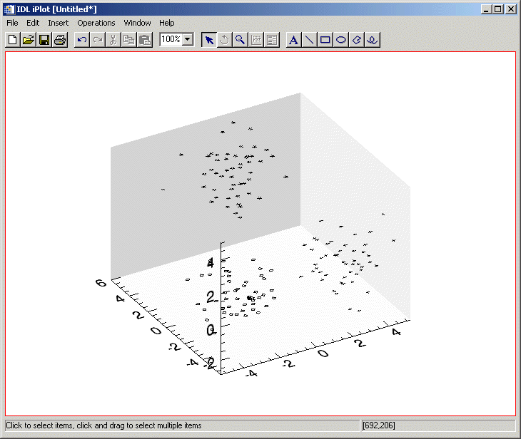

The CLUSTER function computes the classification of an n -column, m -row array, where n is the number of variables and m is the number of observations or samples. CLUST_WTS uses k -means clustering. With this technique, CLUST_WTS starts with k random clusters and then iteratively moves items between clusters, minimizing variability within each cluster and maximizing variability between clusters.
Note: Because the initial clusters are chosen randomly, your results may differ slightly each time the CLUST_WTS routine is invoked, even for the same input data. For data with well-defined clusters the differences should be slight. For randomly-scattered data (no distinguishable clusters), the results may be significantly different, which may indicate that k-means clustering is not appropriate for your data.
Tip: For hierarchical tree clustering, see the CLUSTER_TREE function.
For more information on cluster analysis, see:
Everitt, Brian S. Cluster Analysis . New York: Halsted Press, 1993. ISBN 0-470-22043-0
Result = CLUSTER( Array , Weights [, / DOUBLE ] [, N_CLUSTERS = value ] )
Results in a 1-column, m -row array of cluster number assignments that correspond to each sample.
An n -column, m -row array of type float or double.
An array of weights (the cluster centers) computed using the CLUST_WTS function. The dimensions of this array vary according to keyword values.
Set this keyword to force the computation to be done in double-precision arithmetic.
Set this keyword equal to the number of clusters. The default is based upon the row dimension of the Weights array.
; Construct 3 separate clusters in a 3D space:
n = 50
c1 = RANDOMN(seed, 3, n)
c1[0:1,*] -= 3
c2 = RANDOMN(seed, 3, n)
c2[0,*] += 3
c2[1,*] -= 3
c3 = RANDOMN(seed, 3, n)
c3[1:2,*] += 3
array = [[c1], [c2], [c3]]
; Compute cluster weights, using three clusters:
weights = CLUST_WTS(array, N_CLUSTERS = 3)
; Compute the classification of each sample:
result = CLUSTER(array, weights, N_CLUSTERS = 3)
; Plot each cluster using a different symbol:
IPLOT, array[*, WHERE(result eq 0)], $
LINESTYLE = 6, SYM_INDEX = 2
IPLOT, array[*, WHERE(result eq 1)], /OVERPLOT, $
LINESTYLE = 6, SYM_INDEX = 4
IPLOT, array[*, WHERE(result eq 2)], /OVERPLOT, $
LINESTYLE = 6, SYM_INDEX = 1
|
 |
|
5.0 |
Introduced |